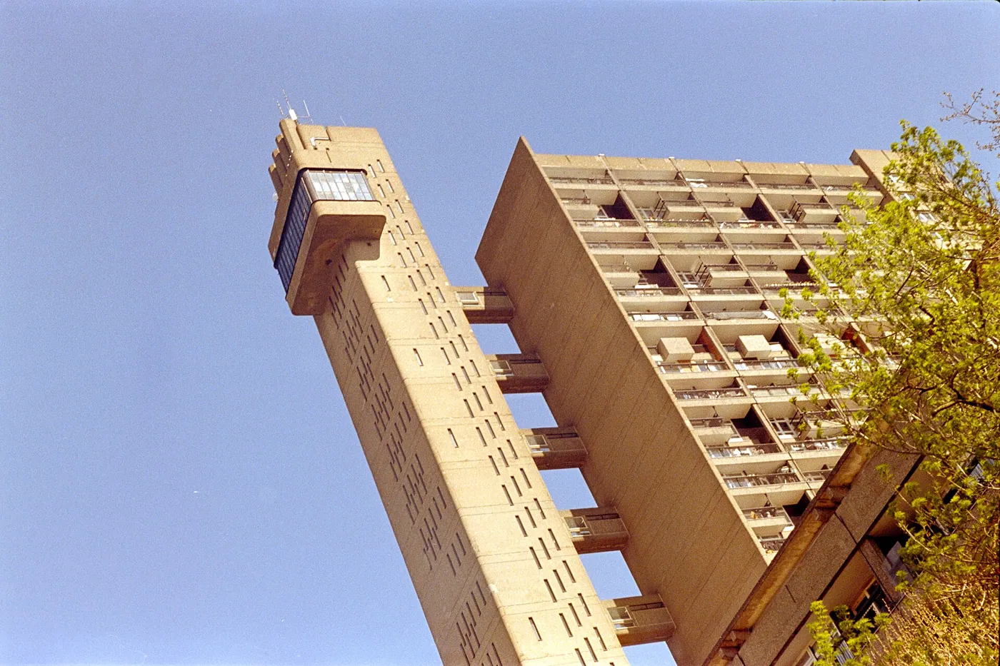
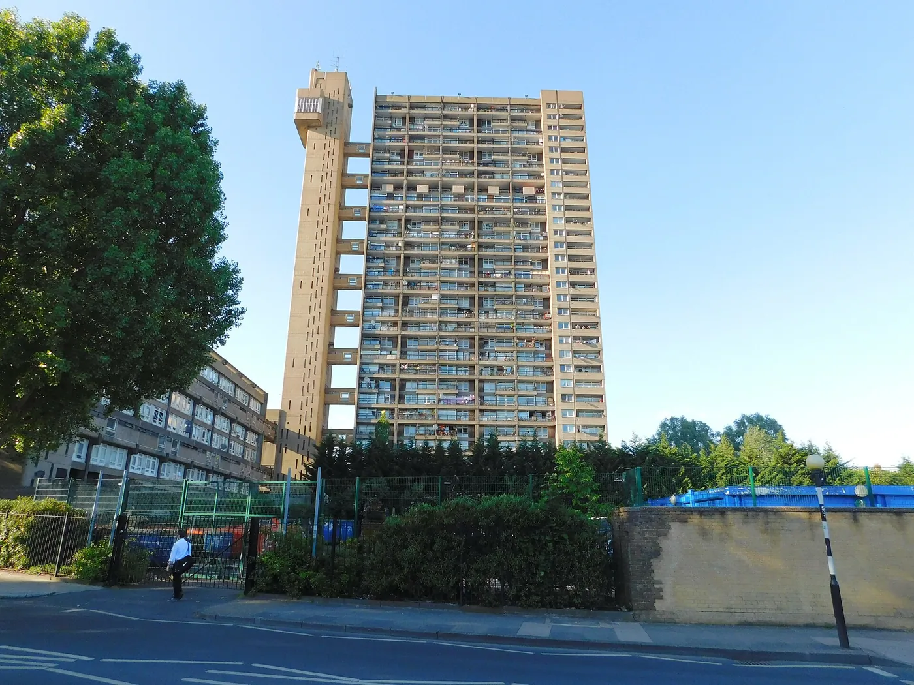
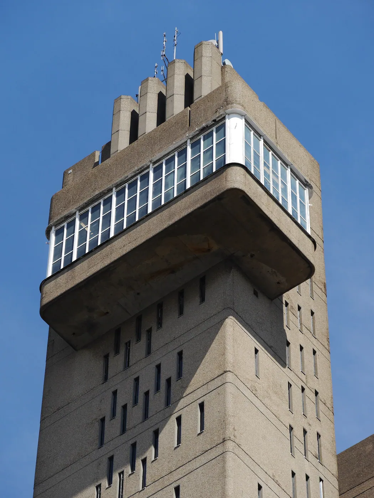
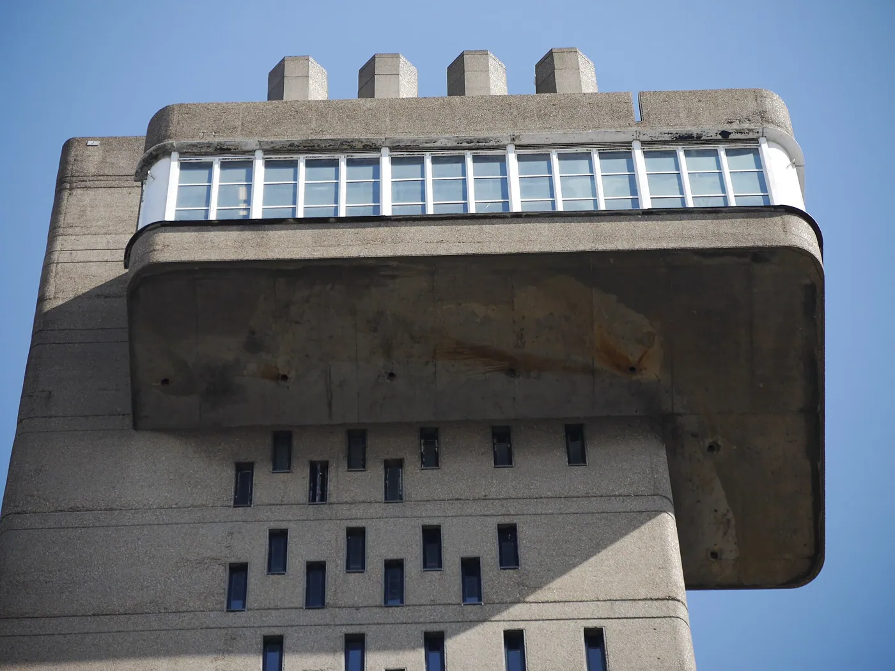
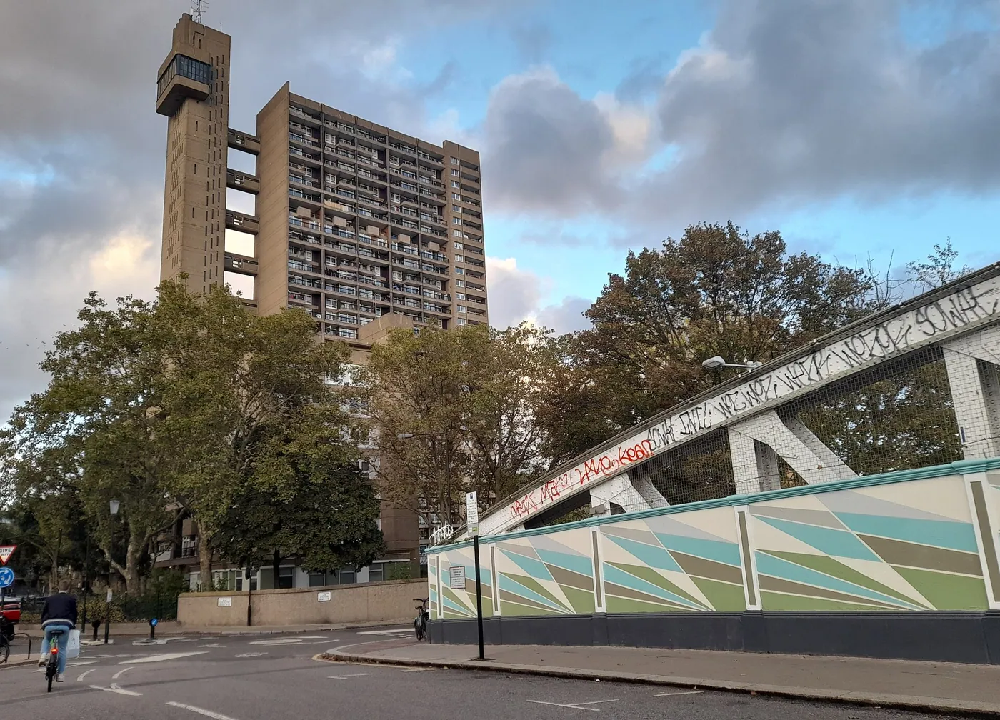

1/7 · Exterior · This picture was uploaded via app "Wiki Loves Monuments United Kingdom" Photo: ThePerfidiousAlbion · CC BY-SA 4.0 · source
2/7 · Exterior · Trellick Tower, Aufnahme 2002Photo: Gunnar Klack · CC BY-SA 4.0 · source3/7 · ExteriorPhoto: Edwardx · CC BY-SA 3.0 · source
4/7 · ExteriorPhoto: Edwardx · CC BY-SA 3.0 · source
5/7 · DetailPhoto: Edwardx · CC BY-SA 3.0 · source6/7 · Detail · Trellick Tower (Tower block in the Brutalist style in Kensal Town, London)Photo: Rc1959 · CC0 · source
7/7 · Context · Trellick Tower, North KensingtonPhoto: David Howard · CC BY-SA 2.0 · sourceHousing · Brutalism
Trellick Tower
Ernő Goldfinger · London, United Kingdom · 1972
Key featuresLifts in a separate tower, bridging to the flats every third floor.
- Architect
- Ernő Goldfinger
- Place
- London, United Kingdom
- Year
- 1972
- Typology
- Housing
- Movement
- Brutalism
- Region
- Europe
See it on the wall